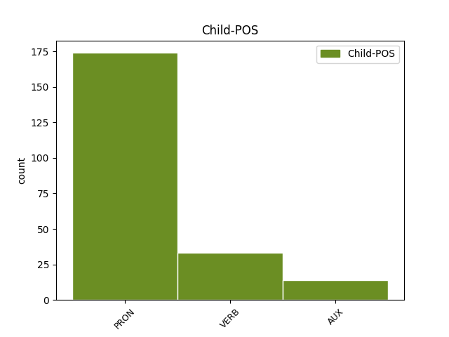

Distribution of features within this leaf

Agreement Rules sorted by frequency.
- When the dependent token is the direct object complements(comp:obj) of the head token,
1 Anche _ _ _ _ 0 _ _ _
2 una _ _ _ _ 0 _ _ _
3 donna _ _ _ _ 0 _ _ _
4 si si PRON PC Clitic=Yes|Person=3|PronType=Prs 5 comp:obj _ _
5 fa fare VERB V Mood=Ind|Number=Sing|Person=3|Tense=Pres|VerbForm=Fin 0 _ _ _
6 saltare _ _ _ _ 0 _ _ _
7 in _ _ _ _ 0 _ _ _
8 aria _ _ _ _ 0 _ _ _
9 . _ _ _ _ 0 _ _ _
10 È _ _ _ _ 0 _ _ _
11 la _ _ _ _ 0 _ _ _
12 versione _ _ _ _ 0 _ _ _
13 terrorista _ _ _ _ 0 _ _ _
14 di _ _ _ _ 0 _ _ _
15 " _ _ _ _ 0 _ _ _
16 No _ _ _ _ 0 _ _ _
17 , _ _ _ _ 0 _ _ _
18 niente _ _ _ _ 0 _ _ _
19 " _ _ _ _ 0 _ _ _
20 . _ _ _ _ 0 _ _ _
21 [ _ _ _ _ 0 _ _ _
22 @user _ _ _ _ 0 _ _ _
23 ] _ _ _ _ 0 _ _ _
1 La _ _ _ _ 0 _ _ _
2 Francia _ _ _ _ 0 _ _ _
3 respinge _ _ _ _ 0 _ _ _
4 i _ _ _ _ 0 _ _ _
5 migranti _ _ _ _ 0 _ _ _
6 a _ _ _ _ 0 _ _ _
7 causa _ _ _ _ 0 _ _ _
8 di _ _ _ _ 0 _ _ _
9 le _ _ _ _ 0 _ _ _
10 precarie _ _ _ _ 0 _ _ _
11 condizioni _ _ _ _ 0 _ _ _
12 igieniche _ _ _ _ 0 _ _ _
13 . _ _ _ _ 0 _ _ _
14 La _ _ _ _ 0 _ _ _
15 replica _ _ _ _ 0 _ _ _
16 : _ _ _ _ 0 _ _ _
17 " _ _ _ _ 0 _ _ _
18 Tranquilli _ _ _ _ 0 _ _ _
19 , _ _ _ _ 0 _ _ _
20 ci ci PRON PC Clitic=Yes|Number=Plur|Person=1|PronType=Prs 21 comp:obl _ _
21 abitueremo abituare VERB V Mood=Ind|Number=Plur|Person=1|Tense=Fut|VerbForm=Fin 0 _ _ _
22 " _ _ _ _ 0 _ _ _
23 . _ _ _ _ 0 _ _ _
24 [ _ _ _ _ 0 _ _ _
25 acid _ _ _ _ 0 _ _ _
26 rain _ _ _ _ 0 _ _ _
27 ] _ _ _ _ 0 _ _ _
1 Non _ _ _ _ 0 _ _ _
2 ho avere AUX VA Mood=Ind|Number=Sing|Person=1|Tense=Pres|VerbForm=Fin 0 _ _ _
3 neanche _ _ _ _ 0 _ _ _
4 guardato _ _ _ _ 0 _ _ _
5 il _ _ _ _ 0 _ _ _
6 " _ _ _ _ 0 _ _ _
7 patt _ _ _ _ 0 _ _ _
8 ( _ _ _ _ 0 _ _ _
9 cc _ _ _ _ 0 _ _ _
10 ) _ _ _ _ 0 _ _ _
11 o _ _ _ _ 0 _ _ _
12 educativo _ _ _ _ 0 _ _ _
13 " _ _ _ _ 0 _ _ _
14 , _ _ _ _ 0 _ _ _
15 tanto _ _ _ _ 0 _ _ _
16 so sapere VERB V Mood=Ind|Number=Sing|Person=1|Tense=Pres|VerbForm=Fin 2 mod _ _
17 che _ _ _ _ 0 _ _ _
18 non _ _ _ _ 0 _ _ _
19 avrò _ _ _ _ 0 _ _ _
20 i _ _ _ _ 0 _ _ _
21 requisiti _ _ _ _ 0 _ _ _
22 per _ _ _ _ 0 _ _ _
23 essere _ _ _ _ 0 _ _ _
24 meritevole _ _ _ _ 0 _ _ _
25 : _ _ _ _ 0 _ _ _
26 la _ _ _ _ 0 _ _ _
27 buona _ _ _ _ 0 _ _ _
28 scuola _ _ _ _ 0 _ _ _
29 è _ _ _ _ 0 _ _ _
30 " _ _ _ _ 0 _ _ _
31 altrove _ _ _ _ 0 _ _ _
32 " _ _ _ _ 0 _ _ _
33 !!! _ _ _ _ 0 _ _ _
1 Ok _ _ _ _ 0 _ _ _
2 @user _ _ _ _ 0 _ _ _
3 ho avere AUX VA Mood=Ind|Number=Sing|Person=1|Tense=Pres|VerbForm=Fin 0 _ _ _
4 capito capitare VERB V Mood=Ind|Number=Sing|Person=1|Tense=Pres|VerbForm=Fin 3 comp:aux _ _
5 torno _ _ _ _ 0 _ _ _
6 a _ _ _ _ 0 _ _ _
7 fare _ _ _ _ 0 _ _ _
8 esami _ _ _ _ 0 _ _ _
9 per _ _ _ _ 0 _ _ _
10 il _ _ _ _ 0 _ _ _
11 debito _ _ _ _ 0 _ _ _
12 , _ _ _ _ 0 _ _ _
13 torno _ _ _ _ 0 _ _ _
14 a _ _ _ _ 0 _ _ _
15 lavorare _ _ _ _ 0 _ _ _
16 che _ _ _ _ 0 _ _ _
17 è _ _ _ _ 0 _ _ _
18 meglio _ _ _ _ 0 _ _ _
19 ! _ _ _ _ 0 _ _ _
20 #labuonascuola _ _ _ _ 0 _ _ _
Disagree Examples:
1 @user _ _ _ _ 0 _ _ _
2 quando _ _ _ _ 0 _ _ _
3 penso _ _ _ _ 0 _ _ _
4 a _ _ _ _ 0 _ _ _
5 il _ _ _ _ 0 _ _ _
6 governo _ _ _ _ 0 _ _ _
7 Monti _ _ _ _ 0 _ _ _
8 mi mi PRON PC Clitic=Yes|Number=Sing|Person=1|PronType=Prs 9 comp:obl _ _
9 viene venire VERB V Mood=Ind|Number=Sing|Person=3|Tense=Pres|VerbForm=Fin 0 _ _ _
10 in _ _ _ _ 0 _ _ _
11 mente _ _ _ _ 0 _ _ _
12 Longanesi _ _ _ _ 0 _ _ _
13 e _ _ _ _ 0 _ _ _
14 il _ _ _ _ 0 _ _ _
15 suo _ _ _ _ 0 _ _ _
16 Ci _ _ _ _ 0 _ _ _
17 salveranno _ _ _ _ 0 _ _ _
18 le _ _ _ _ 0 _ _ _
19 vecchie _ _ _ _ 0 _ _ _
20 zie _ _ _ _ 0 _ _ _
21 è _ _ _ _ 0 _ _ _
22 il _ _ _ _ 0 _ _ _
23 caso _ _ _ _ 0 _ _ _
24 di _ _ _ _ 0 _ _ _
25 rilegger _ _ _ _ 0 _ _ _
26 lo _ _ _ _ 0 _ _ _
27 ? _ _ _ _ 0 _ _ _
1 @user _ _ _ _ 0 _ _ _
2 quando _ _ _ _ 0 _ _ _
3 penso _ _ _ _ 0 _ _ _
4 a _ _ _ _ 0 _ _ _
5 il _ _ _ _ 0 _ _ _
6 governo _ _ _ _ 0 _ _ _
7 Monti _ _ _ _ 0 _ _ _
8 mi _ _ _ _ 0 _ _ _
9 viene _ _ _ _ 0 _ _ _
10 in _ _ _ _ 0 _ _ _
11 mente _ _ _ _ 0 _ _ _
12 Longanesi _ _ _ _ 0 _ _ _
13 e _ _ _ _ 0 _ _ _
14 il _ _ _ _ 0 _ _ _
15 suo _ _ _ _ 0 _ _ _
16 Ci ci PRON PC Clitic=Yes|Number=Plur|Person=1|PronType=Prs 17 comp:obj _ _
17 salveranno salvare VERB V Mood=Ind|Number=Plur|Person=3|Tense=Fut|VerbForm=Fin 0 _ _ _
18 le _ _ _ _ 0 _ _ _
19 vecchie _ _ _ _ 0 _ _ _
20 zie _ _ _ _ 0 _ _ _
21 è _ _ _ _ 0 _ _ _
22 il _ _ _ _ 0 _ _ _
23 caso _ _ _ _ 0 _ _ _
24 di _ _ _ _ 0 _ _ _
25 rilegger _ _ _ _ 0 _ _ _
26 lo _ _ _ _ 0 _ _ _
27 ? _ _ _ _ 0 _ _ _
1 nessuno _ _ _ _ 0 _ _ _
2 quando _ _ _ _ 0 _ _ _
3 ha avere AUX VA Mood=Ind|Number=Sing|Person=3|Tense=Pres|VerbForm=Fin 0 _ _ _
4 visto vedere VERB V Mood=Ind|Number=Sing|Person=1|Tense=Pres|VerbForm=Fin 3 comp:aux _ _
5 uscire _ _ _ _ 0 _ _ _
6 mario _ _ _ _ 0 _ _ _
7 monti _ _ _ _ 0 _ _ _
8 da _ _ _ _ 0 _ _ _
9 l' _ _ _ _ 0 _ _ _
10 ufficio _ _ _ _ 0 _ _ _
11 di _ _ _ _ 0 _ _ _
12 il _ _ _ _ 0 _ _ _
13 PdR _ _ _ _ 0 _ _ _
14 ha _ _ _ _ 0 _ _ _
15 avuto _ _ _ _ 0 _ _ _
16 la _ _ _ _ 0 _ _ _
17 sensazione _ _ _ _ 0 _ _ _
18 di _ _ _ _ 0 _ _ _
19 vedere _ _ _ _ 0 _ _ _
20 un _ _ _ _ 0 _ _ _
21 redivivo _ _ _ _ 0 _ _ _
22 senatore _ _ _ _ 0 _ _ _
23 palpatine _ _ _ _ 0 _ _ _
24 ? _ _ _ _ 0 _ _ _
1 RT _ _ _ _ 0 _ _ _
2 @user _ _ _ _ 0 _ _ _
3 : _ _ _ _ 0 _ _ _
4 Spero sperare VERB V Mood=Ind|Number=Sing|Person=1|Tense=Pres|VerbForm=Fin 0 _ _ _
5 sia essere AUX V Mood=Sub|Number=Sing|Person=3|Tense=Pres|VerbForm=Fin 4 comp:obj _ _
6 colite _ _ _ _ 0 _ _ _
7 . _ _ _ _ 0 _ _ _
8 Ma _ _ _ _ 0 _ _ _
9 ho _ _ _ _ 0 _ _ _
10 paura _ _ _ _ 0 _ _ _
11 sia _ _ _ _ 0 _ _ _
12 amore _ _ _ _ 0 _ _ _
13 . _ _ _ _ 0 _ _ _
1 RT _ _ _ _ 0 _ _ _
2 @user _ _ _ _ 0 _ _ _
3 : _ _ _ _ 0 _ _ _
4 Spero _ _ _ _ 0 _ _ _
5 sia _ _ _ _ 0 _ _ _
6 colite _ _ _ _ 0 _ _ _
7 . _ _ _ _ 0 _ _ _
8 Ma _ _ _ _ 0 _ _ _
9 ho avere VERB V Mood=Ind|Number=Sing|Person=1|Tense=Pres|VerbForm=Fin 0 _ _ _
10 paura _ _ _ _ 0 _ _ _
11 sia essere AUX V Mood=Sub|Number=Sing|Person=3|Tense=Pres|VerbForm=Fin 9 mod _ _
12 amore _ _ _ _ 0 _ _ _
13 . _ _ _ _ 0 _ _ _